건축설비산업기사 (2014-09-20 기출문제)
1과목: 건축일반
1. 공동주택의 단면 형식에 의한 분류에 속하지 않는 것은?
- 홀형
- 플랫형
- 스킵형
- 메조넷형
(정답률: 72%)

2. 한식 주택의 지역별 평면 형태로 옳은 것은?
- 황해지방 -‘田’자형
- 함경, 평안지방 -‘ㄷ’자형
- 서울지방 -‘ㅡ’자형
- 개성지방 -‘ㄱ’자형
(정답률: 74%)
3. 주택 계획 시 대지 선정의 자연적 조건에 대한 설명으로 옳지 않은 것은?
- 일조 및 통풍이 양호할 것
- 지반이 견고하고 배수가 용이할 것
- 소음 및 공해 등이 없는 곳일 것
- 구배는 1/5정도이고 동향일 것
(정답률: 95%)
4. 지붕의 모양에 따른 종류 중 합각지붕으로 옳은 것은?
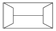
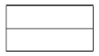
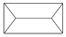
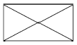
(정답률: 88%)
5. 지능형 빌딩(intelligent building)의 주요 특성으로 옳지 않은 것은?
- 빌딩 자동화
- 복합건축
- 사무자동화
- 정보통신
(정답률: 80%)
6. 경제성을 고려한 철근콘크리트 보 설계시 고려해야 할 사항으로 옳은 것은?
- 보의 춤을 크게 한다.
- 보의 폭을 크게 한다.
- 단면을 줄이고 주근을 많이 사용한다.
- 동일 철근량일 때는 직경이 큰 것을 사용한다.
(정답률: 58%)
7. 아파트의 평면형식에 대한 설명으로 옳지 않은 것은?
- 계단실형은 프라이버시의 침해가 적다.
- 편복도형은 각 호의 통풍 및 채광이 비교적 양호하다.
- 중복도형은 프라이버시가 양호하나 부지 이용률이 낮다.
- 집중형은 복도부분의 환기와 채광이 좋지 않다.
(정답률: 87%)
8. 철골보에서 수평 또는 수직 스티프너를 사용하는 목적과 가장 거리가 먼 것은?
- 플랜지를 보강하기 위해서
- 웨브 플레이트의 좌굴을 방지하기 위해서
- 하중점의 보강을 위해서
- 휨 및 압축좌굴을 방지하기 위해서
(정답률: 55%)
9. 철근콘크리트 계단의 종류로 옳지 않은 것은?
- 슬래브식 계단
- 클링커타일 계단
- 계단보식 계단
- 돌출보식 계단
(정답률: 73%)
10. 철근콘크리트구조의 보에 대한 설명으로 옳지 않은 것은?
- 지지점이 벽돌, 블록 등에 일체로 되어 있지 않고 얹혀 있는 보를 단순보라 한다.
- 주요한 보는 압축측에도 철근을 배근하도록 한다.
- 바닥판의 일부가 보의 일부로 간주될 때 이를 T형보라 한다.
- 양단고정보의 주근은 양단부에서는 하부에, 중앙부에서는 상부에 더 많이 배근한다.
(정답률: 66%)
11. 호텔 객실 계획에서 1개실 크기의 표준으로 가장 큰 것은?
- 싱글룸
- 더블룸
- 트윈룸
- 스위트 더블룸
(정답률: 85%)
12. 건축모듈의 사용방법에 관한 설명으로 옳지 않은 것은?
- 창호의 치수는 문틀과 벽사이의 줄눈 중심간의 치수가 모듈치수에 적합해야 한다.
- 조립식 건물은 각 조립부재의 줄눈 중심간의 거리가 모듈치수에 일치해야 한다.
- 건물의 평면, 높이는 2[M](30[cm])의 배수가 되게 한다.
- 모든 모듈상의 치수는 공칭치수를 말한다.
(정답률: 84%)
13. 15층인 중소형아파트를 시공할 때 현재 가장 많이 적용되는 구조 방식은?
- 내력벽식 구조
- 가구식 구조
- 현수 구조
- 박판 구조
(정답률: 94%)
14. 철근콘크리트 벽체에 관한 설명으로 옳지 않은 것은?
- 지하실 벽과 엘리베이터 벽으로 많이 사용된다.
- 지하실 벽은 토압에 의한 휨을 받는다.
- 벽체는 연속주열로 설계되므로 주로 가로철근이 주근이 된다.
- 철근콘크리트 벽체의 종류에는 장막벽, 칸막이벽, 내진벽 등이 있다.
(정답률: 75%)
15. 초등학교 계획에 대한 설명으로 옳지 않은 것은?
- 교사는 대지조건과 경제조건이 허용하는 한 저층화하는 것이 좋다.
- 저학년은 될 수 있으면 1층에 있게 하며 교문에 근접시킨다.
- 교사의 배치계획에서 분산병렬형은 소규모 부지에 적합하나 구조계획이 복잡하다.
- 저학년의 경우는 종합교실형의 학교운영방식이 장려된다.
(정답률: 91%)
16. 도심지에 위치하는 초등학교의 대지조건으로 옳지 않은 것은?
- 통학권의 중심에 가까운 곳
- 일조 및 배수가 좋은 곳
- 공해가 없는 곳
- 간선도로 및 상업지역에 가까운 곳
(정답률: 93%)
17. 병원건축의 병동부에 대한 설명으로 옳지 않은 것은?
- 간호단위의 병상수는 약 30~40개로 한다.
- 간호사의 보행거리는 25[m] 이내가 되도록 한다.
- 병실의 종류는 1인실, 2인실, 4인실, 6인실 등을 적절히 배분한다.
- 간호사 대기소는 계단, 엘리베이터로부터 떨어진 독립된 배치가 좋다.
(정답률: 91%)
18. 도서관 계획에 대한 설명으로 옳지 않은 것은?
- 도서관 이용자에게 가장 편리한 열람제도는 폐가식이다.
- 서고의 위치는 도서를 가능한 신속하게 이용자에게 전달해 줄 수 있는 것을 목표로 결정한다.
- 도서와 가까운 위치에서 연구를 할 수 있도록 캐럴(carrel)을 설치한다.
- 도서관의 미래 증축을 고려하여 구조계획에 반영한다.
(정답률: 87%)
19. 호텔의 평면계획에 대한 설명으로 옳지 않은 것은?
- 호텔의 기능적 분류에 의하면 관리부분, 공공부분, 숙박부분으로 나눌 수 있다.
- 숙박부분은 호텔의 가장 중요한 부분으로 이에 의해 호텔의 형태가 결정된다.
- 레지덴셜호텔의 객실은 여유 있고 쾌적함을 주어야하며 공공부분은 충분한 면적을 할당해야 한다.
- 리조트 호텔은 부지의 제한으로 대지경계선에 따라 모양이 결정되기 쉬우나 시티 호텔은 자유로운 형태로 디자인 할 수 있다.
(정답률: 86%)
20. 소규모 건축물에 적용되는 조적식구조의 내력벽에 대한 설명으로 옳지 않은 것은?
- 평면 전체에 균형 있게 배치하도록 한다.
- 내력벽으로 둘러싸인 바닥면적의 합계는 100m2 이하가 되도록 한다.
- 보강철근은 굵은 것을 조금 넣는 것보다 가는 철근을 많이 사용하는 것이 좋다.
- 상층과 하층의 내력벽은 수직으로 같은 위치에 배치 하는 것이 좋다.
(정답률: 69%)
2과목: 위생설비
21. 양수량 2[m3/min], 전양정 26[m]의 양수펌프용 전동기의 소요동력은? (단, 펌프의 효율은 65%, 여유율은15%로 한다.)
- 7.5[kW]
- 10[kW]
- 12[kW]
- 15[kW]
(정답률: 45%)
22. 증기가열식 급탕설비에서 시간당 1,500[L]의 급탕을 10[℃]에서 60[℃]로 가열할 경우, 열교환기에서 발생하는 응축수량[kg/h]은? (단, 사용증기의 증발잠열은 2,268[kJ/kg], 물의 비열은 4.2[J/kg∙K]이다.)
- 18.0
- 138.89
- 193.25
- 16,200
(정답률: 65%)
23. 다음 중 기구의 최저필요압력이 가장 낮은 것은?
- 샤워
- 일반수전
- 대변기 세정밸브
- 스톨형 소변기 세정밸브
(정답률: 80%)
24. 최상층에서 배수수직관을 그대로 연장시켜 사용하는 통기관은?
- 공용통기관
- 도피통기관
- 신정통기관
- 결합통기관
(정답률: 77%)
25. 옥내의 배수수평주관 끝에 부착하여 공공하수관으로부터의 유해가사 유입을 방지하는 트랩은?
- P트랩
- U트랩
- S트랩
- 벨트랩
(정답률: 78%)
26. 유량조절용으로 주로 사용되는 밸브는?
- 글로브 밸브
- 게이트 밸브
- 체크 밸브
- 감압 밸브
(정답률: 79%)
27. 물의 경도에 관한 설명으로 옳은 것은?
- 경도가 높은 물을 연수라고 한다.
- 경도의 단위는 [ppm] 등이 사용된다.
- 경수는 빗물, 지표수 등이 해당된다.
- 영구경도는 어떠한 방법으로도 제거할 수 없다.
(정답률: 71%)
28. 통기수직관이 없는 방식으로 배수수평지관에서 유입하는 배수에 선회력을 주어 통기를 위한 공기 코어를 유지하도록 하여 하나의 관으로 배수와 통기를 겸하는 통기방식은?
- 섹스티아 방식
- 각개통기 방식
- 소벤트 방식
- 회로통기 방식
(정답률: 83%)
29. BOD에 관한 설명으로 옳은 것은?
- 생물화학적 산소요구량을 말한다.
- 화학적 산소요구량을 말한다.
- 오수 중에 떠있는 부유물질을 말한다.
- 수중의 염소이온의 양을 말한다.
(정답률: 86%)
30. 급탕설비에서 각층에서의 지관수가 많은 경우, 온수순환량을 균일하게 하기 위한 배관방법은?
- 수평배관방식
- 역환수방식
- 각개입상방식
- 각개입하방식
(정답률: 82%)
31. 다음의 급수방식 중 수질오염의 가능성이 가장 적은 것은?
- 수도직결방식
- 고가수조방식
- 압력수조방식
- 펌프직송방식
(정답률: 91%)
32. 배관재에 요구되는 성능과 가장 거리가 먼 것은?
- 내식성이 커야 한다.
- 용융점이 낮아야 한다.
- 가공이 용이해야 한다.
- 관내의 마찰저항값이 적어야 한다.
(정답률: 78%)
33. 옥외소화전설비의 호스접결구는 특정소방대상물의 각 부분으로부터 하나의 호스접결구까지의 수평거리가 최대 얼마 이하가 되도록 설치하여야 하는가?
- 40[m]
- 50[m]
- 60[m]
- 70[m]
(정답률: 71%)
34. 가스의 연소성을 표시하는 것은?
- 웨베지수
- 비열비
- 거버너
- 단열지수
(정답률: 81%)
35. 수도 본관에서 6[m]의 높이에 있는 샤워기에 급수하는데 필요한 수도본관 내의 최저압력은? (단, 배관 내의 마찰손실수두는 3[mAq]로 한다.)
- 60[kPa]
- 90[kPa]
- 160[kPa]
- 190[kPa]
(정답률: 49%)
36. 급수배관에 관한 설명으로 옳은 것은?
- 배관 내에 생기는 공기를 배출하기 위해서 공기실을 설치한다.
- 배관이 벽이나 바닥을 관통할 때는 관의 수리 및 교체 등을 위하여 슬리브를 설치한다.
- 대규모 건물의 급수주관이나 급수지관의 관경을 결정할 때는 주로 관균등표가 이용된다.
- 급수관은 수리시에 관 속의 물을 완전히 뺄 수 있도록 기울기를 주어야 하며, 일반적으로 하향기울기로 한다.
(정답률: 82%)
37. 스프링클러설비의 화재안전기준에서 다음과 같이 정의되는 것은?
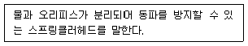
- 건식스프링클러헤드
- 습식스프링클러헤드
- 개방형스프링클러헤드
- 폐쇄형스프링클러헤드
(정답률: 78%)
38. 세정밸브식 대변기에 연결되는 급수관의 최소 관경은?
- 15[mm]
- 20[mm]
- 25[mm]
- 32[mm]
(정답률: 83%)
39. 통기관에 관한 설명으로 옳지 않은 것은?
- 습통기관은 통기와 배수의 역할을 함께하는 통기관이다.
- 각개통기관의 관경은 그것이 접속되는 배수관 관경의 1/2 이상으로 한다.
- 간접배수계통 및 특수통기계통의 통기관은 통기헤더에 접속하여 설치한다.
- 지붕을 관통하는 통기관은 지붕으로부터 150[mm] 이상 입상하여 대기 중에 개구한다.
(정답률: 52%)
40. 온도 20[℃], 길이 100[m]인 동관에 온수가 흘러 60[℃]가 되었을 때, 동관의 팽창된 길이는 얼마인가? (단, 동관의 선팽창계수는 0.171×10-4/℃이다.)
- 34.2[mm]
- 68.4[mm]
- 136.8[mm]
- 171[mm]
(정답률: 68%)
3과목: 공기조화설비
41. 보일러의 출력표시 방법 중 난방부하와 급탕부하를 합한 용량으로 표시하는 것은?
- 상용출력
- 정미출력
- 정격출력
- 과부하출력
(정답률: 74%)
42. 습공기를 가열하였을 때 상태량이 변하지 않는 것은?
- 엔탈피
- 절대습도
- 상대습도
- 습구온도
(정답률: 79%)
43. 온도변화에 의한 배관의 수축이나 팽창량을 흡수하기 위해 사용되는 신축이음쇠에 해당하지 않는 것은?
- 벨로즈형
- 슬리브형
- 루프형
- 플랜지형
(정답률: 73%)
44. 어느 송풍기의 회전수가 750[rpm]일 때 송풍량이 100 [m3/min], 축동력이 1.5[kW], 송풍기 전압이 400[Pa]이다. 이 송풍기의 회전수를 900[rpm]으로 변화시켰을 때 전압은 얼마로 되는가?
- 400[Pa]
- 576[Pa]
- 711.1[Pa]
- 941.1[Pa]
(정답률: 50%)
45. 냉동기의 압축기에서 토출된 고온 ㆍ 고압의 냉매증기는 응축기에서 방열하고 액화된다. 이 때 방열되는 응축열로 물이나 공기를 가열하여 난방에 이용하는 장치는?
- 열펌프
- 냉각탑
- 빙축열조
- 팬코일 유닛
(정답률: 68%)
46. 증기트랩에 관한 설명으로 옳지 않은 것은?
- 플로트 트랩은 응축수를 연속으로 배출시킬 수 있다.
- 바이메탈 트랩은 과열증기에도 사용할 수 있으나 반응시간이 길다.
- 상향 버킷 트랩은 적용압력의 범위가 좁지만 공기의 배출이 용이하다.
- 벨로즈 트랩은 온도조절식 트랩으로 초기 가동시에 공기 배출능력이 좋다.
(정답률: 50%)
47. 덕트에 관한 설명으로 옳지 않은 것은?
- 덕트의 분기가 복잡한 경우에는 급기 챔버를 설치한다.
- 분기는 저항이 큰 부속을 우선적으로 사용하는 것을 원칙으로 한다.
- 주 덕트의 주요 분기점, 송풍기 출구 측에는 풍량조절댐퍼를 설치한다.
- 장방형 덕트의 분기 ㆍ 합류 방식은 원칙적으로 분할 삽입 방식으로 한다.
(정답률: 66%)
48. 열이 이동하는 형식 중 전도에 관한 설명으로 가장 알맞은 것은?
- 순수한 열전도는 액체 내에서만 발생한다.
- 유체의 흐름에 의해서 열이 이동되는 것을 총칭한다.
- 열에너지가 전자파의 형태로 물체로부터 방출되는 현상이다.
- 물체에 온도차가 있을 때 열이 온도가 높은 곳에서 낮은 곳으로 그 물체를 통하여 이동되는 현상이다.
(정답률: 74%)
49. 다음 중 유리로부터의 일사에 의한 취득열량 계산시 고려할 사항과 가장 거리가 먼 것은?
- 유리의 두께
- 유리창의 범위
- 창의 유리 면적
- 상당외기온도차
(정답률: 58%)
50. 공조부하에 관한 설명으로 옳지 않은 것은?
- 공조기부하는 공기 냉각기나 가열기 등에서 처리해야 할 열부하를 말한다.
- 현열부하는 공기의 건구온도를 변화시키기 위하여 가열 또는 냉각하는 열부하를 말한다.
- 최대열부하는 공조기부하에 펌프 및 배관 등의 열부하를 더한 것으로 냉동기나 보일러 용량을 결정하는데 이용된다.
- 외기부하는 환기를 위해 외기를 공조기로 도입하여 실내의 온∙습도 상태까지 냉각∙감습하거나, 가열∙가습하는데 필요한 열량을 말한다.
(정답률: 55%)
51. 실내외의 온도차에 의한 공기의 밀도차가 원동력이 되는 환기는?
- 풍력환기
- 중력환기
- 기계환기
- 동력환기
(정답률: 86%)
52. 습공기의 상태변화 성분을 절대습도 변화량에 대한 전열량의 변화량 비율로 나타낸 것은?
- 현열비
- 포화도
- 비체적
- 열수분비
(정답률: 67%)
53. 덕트 내의 전압이 360[Pa], 정압이 120[Pa]인 경우 덕트 내의 풍속은 약 얼마인가? (단, 공기의 밀도는 1.2[kg/m3]이다.)
- 10[m/s]
- 15[m/s]
- 20[m/s]
- 25[m/s]
(정답률: 54%)
54. 외기 CO2농도는 350[ppm]이며, 실내 CO2의 허용농도를 1,000[ppm]으로 할 때, 호흡시의 1인당 CO2 배출량이 0.02[m3/h]일 경우 1인당 요구되는 필요 환기량은?
- 24.9[m3/h ㆍ 인]
- 27.5[m3/h ㆍ 인]
- 30.8[m3/h ㆍ 인]
- 35.6[m3/h ㆍ 인]
(정답률: 65%)
55. 냉각탑을 송품방식에 따라 구분할 경우, 팬이 냉각탑의 공기 출구 측에 위치해 있는 것은?
- 압입식
- 흡입식
- 대향류형
- 직교류형
(정답률: 45%)
56. 다음의 공기조화방식 중 전공기 방식이 아닌 것은?
- 2중 덕트 방식
- 단일 덕트 방식
- 멀티존 유닛 방식
- 팬코일 유닛 방식
(정답률: 69%)
57. 흡수식 냉동기에 관한 설명으로 옳지 않은 것은?
- 증발기, 흡수기, 발생기, 응축기 등으로 구성되어 있다.
- 기계적 에너지가 아닌 열에너지에 의해 냉동효과를 얻는다.
- 냉방용의 흡수식 냉동기는 물과 브롬화리튬(LiBr)의 혼합용액을 사용한다.
- 단효용 흡수식 냉동기의 발생기는 고온발생기와 저온 발생기로 구성되어 있다.
(정답률: 64%)
58. 보일러에 관한 설명으로 옳지 않은 것은?
- 입형보일러는 사용압력이 높아 규모가 큰 건물에 주로 사용된다.
- 노통 연관보일러는 보유수면이 넓어서 급수용량 제어가 용이하다.
- 관류보일러는 수관보일러와 같이 수관으로 되어 있으나 드럼이 없다.
- 수관보일러는 대형 건물 또는 병원이나 호텔 등과 같이 고압증기를 다량 사용하는 곳이나 지역난방 등에 사용된다.
(정답률: 74%)
59. 공기조화방식 중 변풍량 방식에 사용되는 변풍량 유닛에 관한 설명으로 옳지 않은 것은?
- 바이패스형은 천장 내의 조명으로 인한 발생열을 제거할 수 있다.
- 유인형은 고압의 송풍기가 필요하고 실내의 오염물 제거 성능이 낮다.
- 슬롯형은 송풍덕트 내의 정압제어가 필요 없고, 유닛의 소음 발생이 적다.
- 바이패스형은 송풍동력의 절감이 어렵고, 덕트 계통의 증설이나 개설에 대한 적응성이 적다.
(정답률: 58%)
60. 다음 중 난방용 온수배관 설계 순서에 있어서 가장 먼저 이루어져야 하는 작업은?
- 배관경 결정
- 난방부하 계산
- 온수순환펌프 결정
- 각 구간별 온수 순환량 산출
(정답률: 80%)
4과목: 건축설비관계법규
61. 6층 이상의 거실면적의 합계가 3,000[m2] 인 경우 설치하여야 하는 승용승강기의 최소 대수가 2대인 건축물의 용도에 속하지 않는 것은? (단, 8인승 승강기의 경우)
- 판매시설
- 업무시설
- 의료시설
- 문화 및 집회시설 중 공연장
(정답률: 65%)
62. 다음은 무창층에 관한 기준 내용이다. 밑줄 친 요건에 속하지 않는 것은?
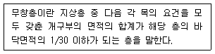
- 도로 또는 차량이 진입할 수 있는 빈터를 향할 것
- 내부 또는 외부에서 쉽게 부수거나 열 수 있을 것
- 크기는 지름 50[cm] 이상의 원이 외접할 수 있는 크기일 것
- 해당 층의 바닥면으로부터 개구부 밑부분까지의 높이 가 1.2[m] 이내일 것
(정답률: 68%)
63. 다음은 건축법령에 따른 지하층의 정의 내용이다. ( ) 안에 알맞은 것은?
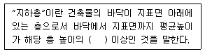
- 1/4
- 1/3
- 1/2
- 2/3
(정답률: 87%)
64. 건축물의 냉방설비에 대한 설치 및 설계기준상 포접 합물(Clathrate)이나 공융염(Eutectic Salt) 등의 상변 물질을 심야시간에 냉각시켜 동결한 후 그 밖의 시간에 이를 녹여 냉방에 이용하는 냉방설비로 정의되는 것은?
- 빙축열식 냉방설비
- 수축열식 냉방설비
- 물질축열식 냉방설비
- 잠열축열식 냉방설비
(정답률: 57%)
65. 건축물을 건축하는 경우 해당 건축물의 설계자가 국토교통부령으로 정하는 구조기준 등에 따라 그 구조의 안전을 확인하여야 하는 대상 건축물에 속하는 것은?
- 높이가 12[m]인 건축물
- 층수가 2층인 건축물
- 처마높이가 8[m]인 건축물
- 기둥과 기둥 사이의 거리가 10[m]인 건축물
(정답률: 68%)
66. 문화 및 집회시설 중 공연장의 개별관람석의 바닥면적이 1,200[m2] 인 경우, 이 개별관람석의 출구는 최소 몇 개소 이상 설치하여야 하는가? (단, 각 출구의 유효너비가 1.8[m]인 경우)
- 2개소
- 3개소
- 4개소
- 5개소
(정답률: 70%)
67. 건축물의 에너지절약 설계기준에 따른 건축부분의 권장사항으로 옳지 않은 것은?
- 외벽 부위는 내단열로 시공한다.
- 공동주택은 인동간격을 넓게 하여 저층부의 일사 수 열량을 증대시킨다.
- 건물의 창호는 가능한 작게 설계하고, 특히 열손실이 많은 북측의 창면적은 최소화한다.
- 건축물의 체적에 대한 외피면적의 비 또는 연면적에 대한 외피면적의 비는 가능한 작게 한다.
(정답률: 85%)
68. 피뢰설비를 설치하여야 하는 대상 건축물의 높이 기준은?
- 10[m] 이상
- 12[m] 이상
- 15[m] 이상
- 20[m] 이상
(정답률: 81%)
69. 다음은 숙박시설이 있는 특정소방대상물의 수용인원산정 방법에 관한 기준 내용이다. ( ) 안에 알맞은 것은?
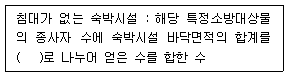
- 1.2[m2]
- 1.9[m2]
- 3[m2]
- 4.6[m2]
(정답률: 62%)
70. 건축법령상 초고층 건축물의 정의로 옳은 것은?
- 층수가 30층 이상이거나 높이가 90[m]이상인 건축물
- 층수가 30층 이상이거나 높이가 120[m]이상인 건축물
- 층수가 50층 이상이거나 높이가 150[m]이상인 건축물
- 층수가 50층 이상이거나 높이가 200[m]이상인 건축물
(정답률: 72%)
71. 건축물의 출입구에 설치하는 회전문은 계단이나 에스컬레이터로부터 최소 얼마 이상의 거리를 두어야 하는가?
- 1[m]
- 1.5[m]
- 2[m]
- 2.5[m]
(정답률: 89%)
72. 건축물의 거실에 국토교통부령으로 정하는 기준에 따라 배연설비를 하여야 하는 대상 건축물에 속하지 않는 것은? (단, 6층 이상의 건축물로서, 피난층이 아닌 경우)
- 아파트
- 숙박시설
- 판매시설
- 업무시설
(정답률: 68%)
73. 공동주택과 오피스텔의 난방설비를 개별난방방식으로 하는 경우에 관한 기준 내용으로 옳지 않은 것은?
- 보일러는 거실 외의 곳에 설치할 것
- 보일러의 연도는 내화구조로서 공동연도로 설치할 것
- 전기보일러를 사용하는 경우, 보일러실의 윗부분에는 면적이 0.5[m2] 이상인 환기창을 설치할 것
- 오피스텔의 경우에는 난방구획마다 내화구조로 된 벽∙바닥과 갑종방화문으로 된 출입문으로 구획할 것
(정답률: 73%)
74. 다음의 소방시설 중 소화활동설비에 속하는 것은?
- 소화수조
- 공기호흡기
- 비상방송설비
- 비상콘센트설비
(정답률: 86%)
75. 다음은 신축하는 100세대 이상의 공동주택에 설치하는 기계환기설비에 관한 기준 내용이다. ( ) 안에 알맞은 것은?
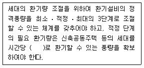
- 0.3회
- 0.5회
- 0.7회
- 1.2회
(정답률: 85%)
76. 다음은 건축물의 에너지절약 설계기준에 따른 건축 부문의 권장사항이다. ( ) 안에 알맞은 것은?
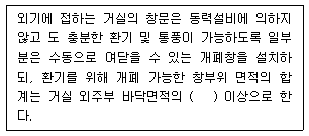
- 1/5
- 1/10
- 1/15
- 1/20
(정답률: 45%)
77. 자동화재탐지설비를 설치하여야 하는 특정소방대상물에 속하지 않는 것은?
- 연면적이 600[m2]인 의료시설
- 연면적이 600[m2]인 업무시설
- 연면적이 1,000[m2]인 판매시설
- 연면적이 2,000[m2]인 교육연구시설
(정답률: 67%)
78. 소방안전관리자를 두어야 하는 특급 소방안전관리대상물의 층수 기준은? (단, 지하층 포함)
- 10층 이상
- 20층 이상
- 30층 이상
- 40층 이상
(정답률: 77%)
79. 건축허가신청에 필요한 설계도서 중 평면도에 표시하여야 할 사항에 속하지 않는 것은?
- 승강기의 위치
- 공개공지 및 조경계획
- 기둥 ㆍ 벽 ㆍ 창문 등의 위치
- 방화구획 및 방화문의 위치
(정답률: 85%)
80. 다음은 비상경보설비 또는 단독경보형 감지기의 설치 면제에 관한 기준 내용이다. ( ) 안에 알맞은 것은?
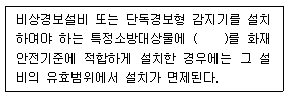
- 비상방송설비
- 스프링클러설비
- 자동화재탐지설비
- 자동화재속보설비
(정답률: 64%)